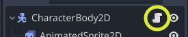
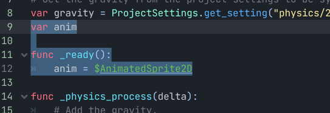
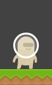
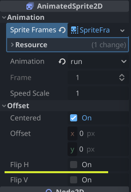
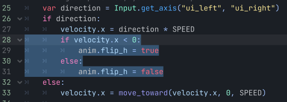
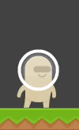

3 - Animasjon Fortsettelse
Åpne scriptet vi la til på karakteren vår i del 2. Du kan åpne dette ved å trykke på arket ved siden av øyet på noden.

Vi ønsker å gjøre forandringer på AnimatedSprite2D, som er “child noden” til CharacterBody2D. Vi lagrer pekeren til AnimatedSprite2D i en variabel, slik at vi ikke trenger å hente den hver gang vi skal bruke den. Først definerer vi variabelen som skal holde på pekeren, men ikke gi den en verdi. Vi må være sikre på at AnimatedSprite2D noden er lastet inn før vi kan peke til den. Dette bruker vi _ready() funksjonen for, den venter til alt er lastet inn, så kjører den en gang. i denne funksjonen setter vi verdien til $AnimatedSprite2D. vi bruker $ for å få tak i en “child node”, en node som ligger under noden som scriptet ligger i. koden din skal nå se omtrent sånn ut. De nye linjene er markert med blått.
 
Vi starter med å legge til kode for å bytte mellom hoppe og stå animasjonene. Vi skriver koden vår under move_and_slide() funksjonen. Vi starter med en test for å se om karakteren beveger seg vertikalt, og dersom den gjør det spiller vi av “jump” animasjonen, om den ikke stemmer bytter vi til “idle”
if velocity.y != 0:
anim.play("jump")
else:
anim.play("idle")Alt vi trenger for å legge til en løpeanimasjon her er å legge til en elif som sjekker om vi beveger oss horisontalt.
if velocity.y != 0:
anim.play("jump")
elif velocity.x != 0:
anim.play("run")
else:
anim.play("idle")ved å ha testen til løpe animasjonen etter hoppe animasjonen vil hoppe animasjonen overstyre løpeanimasjonen, slik at vi kan bevege oss i luften uten at karakteren løper i løse luften. Nå mangler vi bare at karakteren snur seg. Vi kan se i inspektøren om det er en lett måte å gjøre dette med AnimatedSprite2D.

Alt vi ser i inspektøren kan vi modifisere i koden vår også, så alt vi trenger å gjøre nå er å sjekke hvilken vei karakteren går NÅR spilleren holder nede en knapp, og slå på Flip H om vi går til venstre.
if velocity.x < 0:
anim.flip_h = true
else:
anim.flip_h = falseVi kan skrive denne koden inn her:

Om du ønsker at kameraet skal følge karakteren, bare legg inn Camera2D inn i spiller scenen, og pass på at det er enabled.
